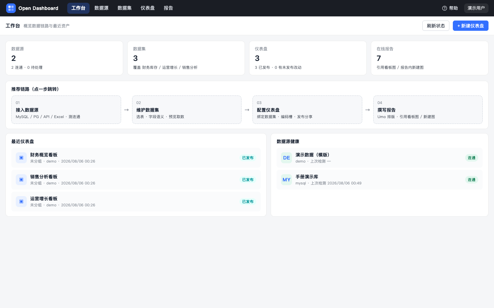
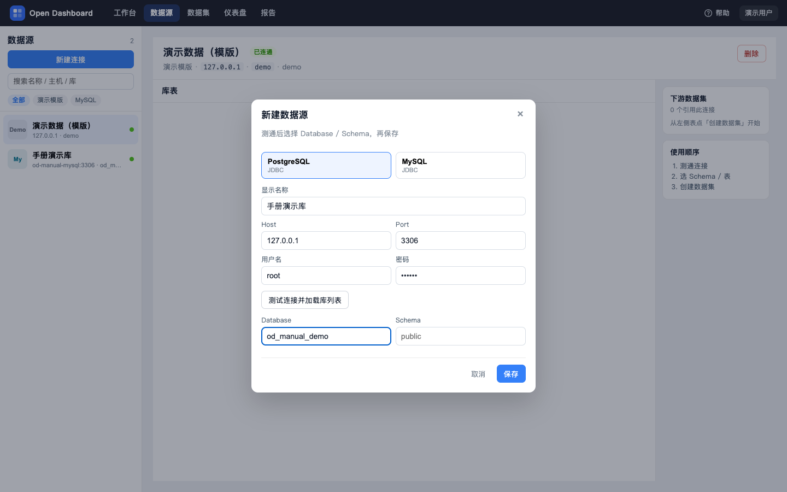
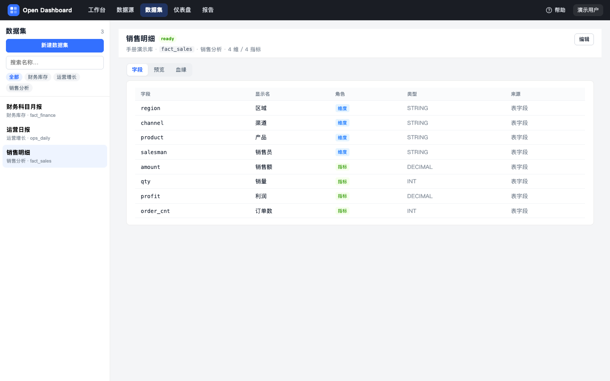
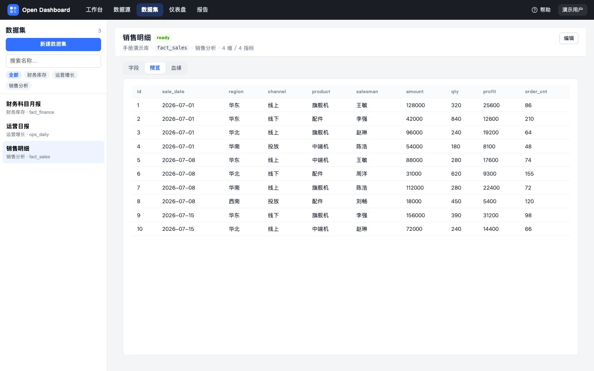
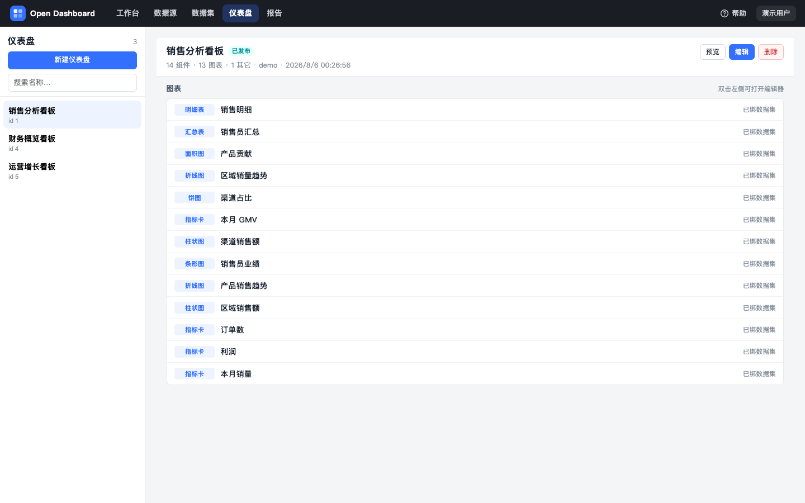
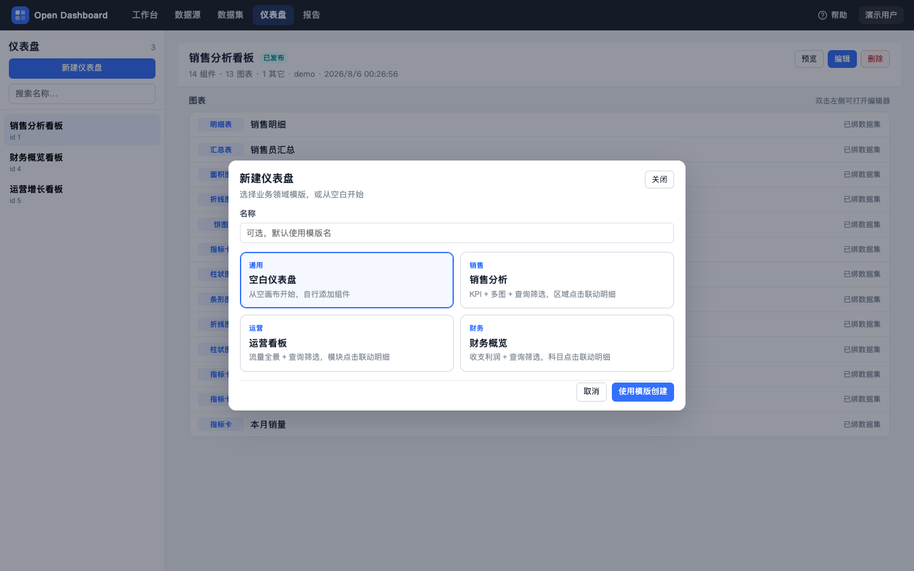
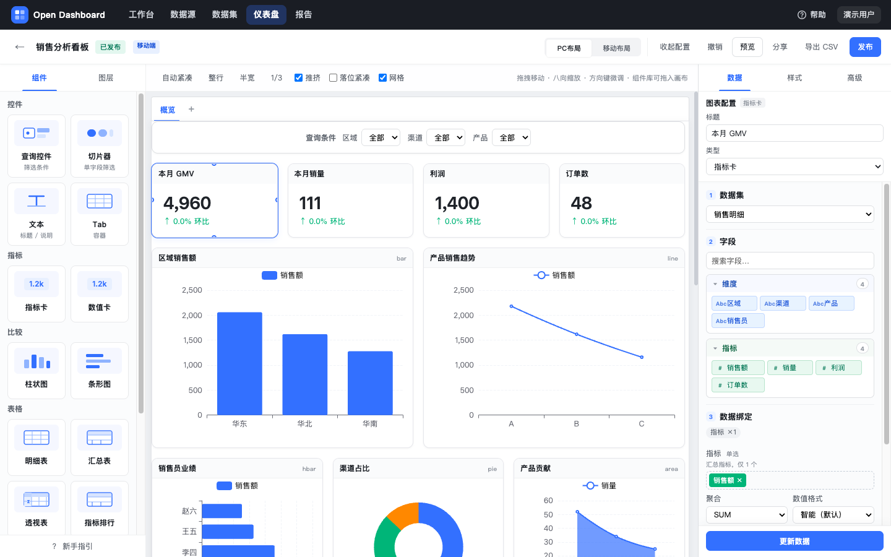
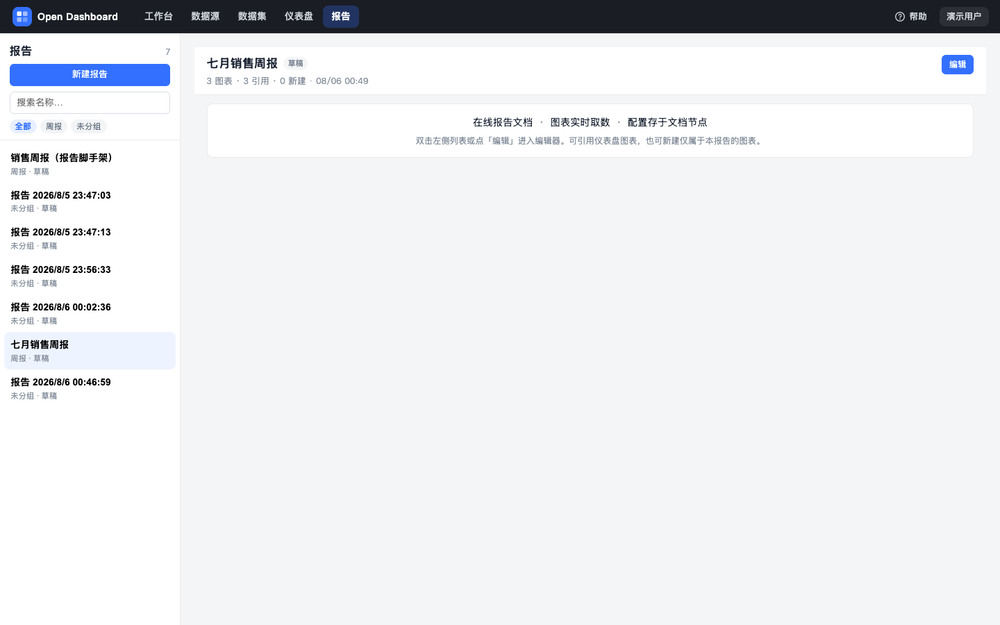
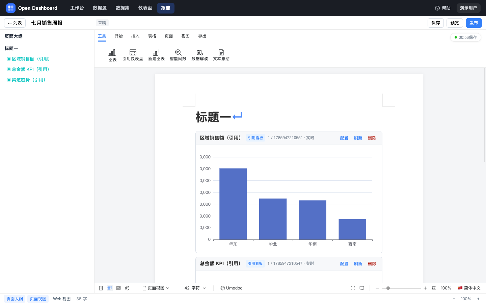
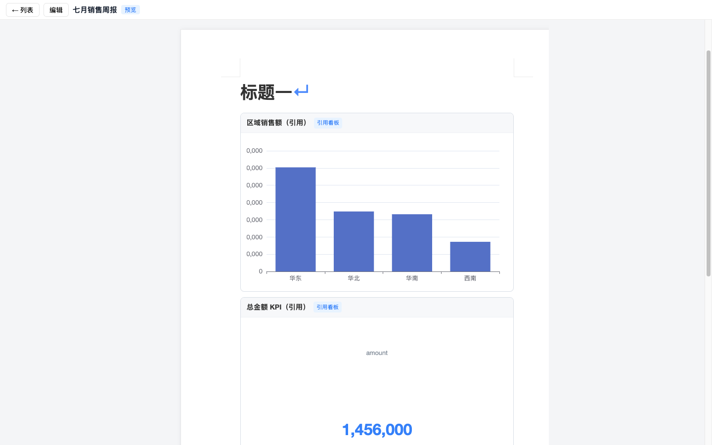

1. 产品简介
Open Dashboard 面向分析师与业务同学，把「连库 → 建模 → 出图 → 成文」串成一条清晰工作流。
连接业务库
MySQL / PostgreSQL 等 JDBC 连接，测通后浏览表目录。
定义语义字段
选表，划分维度 / 指标，预览取数，供图表绑定。
网格画布编排
拖入图表与筛选控件，编码后发布、分享。
图文混排成文
Umo 排版，引用看板图或报告内新建图，实时取数。
od_manual_demo（MySQL，用户 root），与业务库隔离；含销售 / 运营 / 财务三套场景表。重建脚本见 docs/user-manual/seed/。2. 快速开始（推荐路径）
第一次使用时，按下列顺序操作即可跑通全链路。工作台首页也提供了同样的「推荐链路」一键跳转。

- 接入数据源 顶栏进入「数据源」→「新建连接」→ 填写主机/端口/库名/账号 → 测试连通 → 保存。
- 创建数据集 在数据源详情里选一张表，点「创建数据集」；或在「数据集」页新建。配置维度与指标后保存。
- 配置仪表盘 「仪表盘」→「新建仪表盘」选模板或空白 → 拖入图表 → 选数据集并拖字段到编码槽 →「更新数据」。
- 发布与分享 顶栏「发布」固化观看副本；「分享」生成公开链接，无需登录即可只读查看。
- （可选）撰写报告 「报告」→ 新建 → 在工具栏「工具」中引用仪表盘图表或新建图表，保存并发布。
3. 核心概念
理解这几个名词，后续操作会更顺。
| 概念 | 说明 |
|---|---|
| 数据源 | 到业务数据库的连接配置（类型、主机、端口、库、账号等）。仪表盘不直接连数据源。 |
| 数据集 | 基于某张表的语义模型：字段角色（维度 / 指标）、显示名、可选计算列。图表的唯一数据绑定对象。 |
| 维度 / 指标 | 维度用于分组、轴、切片（如地区、日期）；指标用于聚合度量（如销售额、订单数）。 |
| 仪表盘 | 网格画布 + 组件集合。组件含图表、查询控件、切片器、文本等。 |
| 编码槽 encode | 图表的数据映射：把数据集字段拖入维度轴、指标轴等槽位，与样式 / 高级配置分离。 |
| 草稿 / 已发布 | 编辑改的是草稿；「发布」后才更新观看与分享所见。已发布后若再改草稿，会出现「有未发布改动」。 |
| 分享 Token | 公开只读链接 /share/:token，无需登录，仅展示已发布内容。 |
| 在线报告 | 图文混排文档。可引用看板中的图，或在报告内单独建图；文档不存查询结果行，打开时实时取数。 |
发布状态说明
草稿 从未发布过 已发布 草稿与线上一致 有未发布改动 线上有版本，但草稿又改过
5. 工作台
打开产品后的首页，快速了解资产规模并跳转到各模块。
你能做什么
- 查看数据源 / 数据集 / 仪表盘 / 在线报告的数量与健康摘要
- 点击推荐链路四步，一键进入对应模块
- 从「最近仪表盘」直接进入编辑器
- 查看数据源连通状态
- 「刷新状态」重新拉取统计；「+ 新建仪表盘」快速创建空白看板并进入编辑
6. 数据源
管理到业务库的连接。完成测通后，即可从某张表创建下游数据集。

od_manual_demo · 用户 root；中间可浏览 fact_sales / ops_daily / fact_finance6.1 新建连接
- 打开新建面板 进入「数据源」，点击左侧蓝色按钮「新建连接」。
- 选择类型并填写参数 选择 MySQL / PostgreSQL 等，填写显示名、主机、端口、数据库、用户名、密码。
- 测试连通并拉目录 先点测试 / 探测；成功后按提示选择 Database / Schema（PostgreSQL 可切换 Schema）。
- 保存 保存后左侧列表出现该连接，状态点为绿色「已连通」。

6.2 浏览库表并创建数据集
- 选中连接左侧点选一条数据源，中间展示库表清单（可用「筛选表名」缩小范围）。
- 测试 / 编辑 / 删除右上角可「测试连接」「编辑」或「删除」。
- 创建数据集在目标表行点击「创建数据集」，跳转到数据集工作室并预填该表。
7. 数据集
数据集是图表的「语义表」。没有配置好的维度 / 指标，编辑器里的图无法出数。

7.1 查看数据集
- 左侧按文件夹标签筛选（如财务库存、运营增长、销售分析），或搜索名称
- 选中后右侧三个页签： 字段（角色与类型）、 预览（前 N 行真实取数）、 血缘（数据源 → 表 → 字段语义）
- 点「编辑」进入数据集工作室

7.2 新建 / 编辑数据集（工作室）
- 选定物理表 选择数据源与表（从数据源页「创建数据集」进入时会自动带上）。
- 配置维度与指标 从字段池拖拽或双击字段，放入维度区或指标区；可改显示名。
- （可选）计算列 添加计算列：字段名、显示名、表达式、角色。配置可保存；表达式引擎执行能力以当前版本为准。
- 保存 保存后状态为 ready，即可在仪表盘 / 报告中绑定。
8. 仪表盘列表
管理所有看板：新建（模板）、预览、编辑、删除，并查看发布状态与图表摘要。

8.1 新建仪表盘
- 点「新建仪表盘」打开模板选择弹窗。
- 选择模板 可选：空白仪表盘、销售分析、运营看板、财务概览。名称可留空（默认用模板名）。
- 「使用模板创建」创建成功后进入编辑器。

8.2 列表常用操作
预览
以只读方式查看（优先已发布副本；失败则回落草稿）。
编辑
进入画布编辑器。也可双击列表项打开。
删除
删除仪表盘节点。请确认无下游分享依赖后再删。
搜索
左侧搜索框按名称过滤看板。
9. 仪表盘编辑器
核心工作区。三栏布局：左组件库 · 中网格画布 · 右配置面板。首次进入会有新手指引。

9.1 界面分区
| 区域 | 作用 |
|---|---|
| 顶栏 | 返回、标题、草稿状态、PC / 移动端切换、收起配置、撤销、预览、分享、导出 CSV、发布。 |
| 左侧 | 组件库（控件 / 通用 / 指标 / 比较 / 表格等）与图层列表。点击或拖入画布添加组件。 |
| 中间 | 网格画布。拖拽移动、八向缩放、方向键微调；可开关推挤、落位紧凑、网格线。 |
| 右侧 | 选中组件后的配置：数据（数据集 + 编码）、样式、高级（联动等）。底部「更新数据」刷新出图。 |
9.2 添加并配置一张图
- 从组件库加入图表 例如柱状图、折线图、饼图、指标卡、明细表 / 汇总表 / 透视表等。新建组件不会预填数据。
- 选中画布上的组件 右侧出现配置面板。填写标题，确认图表类型。
- 选择数据集 在「数据」页签选择工作区中的数据集。若提示缺少配置，先完成数据集字段设置。
- 拖字段到编码槽 把维度字段拖到维度槽，指标字段拖到指标槽（具体槽位随图类型变化）。
- 点击「更新数据」 触发真实查询并刷新图表。草稿会自动防抖保存，无需手动「另存为」。
9.3 常用组件类型
| 类别 | 组件 | 用途 |
|---|---|---|
| 控件 | 查询控件、切片器 | 页面级筛选；字段由你自行配置，不固定在顶栏 |
| 通用 | 文本、Tab | 说明文案、分区切换 |
| 指标 | 指标卡、数值卡 | 关键 KPI 展示 |
| 比较 | 柱状图、条形图、折线/面积、饼/环等 | 趋势与对比 |
| 表格 | 明细表、汇总表、透视表、指标排行 | 明细下钻与排名 |
9.4 筛选与联动
- 需要筛选时，拖入查询控件或切片器，在右侧配置关联字段。
- 图间联动：在「高级」中配置联动关系（字段映射），保存后预览页点击源图可驱动目标图刷新。
?guide=1 可再次弹出新手指引（顶栏导航 → 操作栏 → 组件库 → 画布 → 配置面板）。11. 移动端布局
PC 与移动端使用独立布局（移动端为 6 列网格）。样式可选择同步或分设。
- 切换到「移动端」 编辑器顶栏在 PC / 移动端之间切换表面。
- 挑选上板组件 从 PC 侧已有组件池中勾选需要出现在手机布局的组件，再在 6 列网格中调整位置与尺寸。
- 预览多设备宽度 预览支持手机壳与常见宽度（如 iPhone / Android / Pad），确认可读性后再发布。
12. 在线报告
基于 Umo 的图文混排编辑器。适合周报、汇报材料：文字叙述 + 实时图表。

12.1 列表操作
- 「新建报告」创建草稿并进入编辑
- 左侧搜索 / 按文件夹筛选；选中查看摘要（图表总数、引用看板数、报告内新建数）
- 双击或点「编辑」进入编辑器；可进入「预览」
12.2 编辑报告

- 撰写正文 像在线文档一样输入标题与段落，使用字体、列表、表格、图片等常规排版能力。
-
插入实时图表
打开 Ribbon「工具」页签，使用：
① 引用仪表盘：选看板 → 多选图表 → 预览 → 按序插入；
② 新建图表：仅存于本报告，不写回仪表盘，配置数据集与编码后插入。 - 调整图表块 选中已插入的图表块，右侧 Inspector 可改数据 / 样式 / 高级，或删除该块。
- 保存与发布 「保存」写入文档；「发布」更新对外预览。可用 ⌘+S / Ctrl+S 快捷保存。
| 图表来源 | 含义 |
|---|---|
dashboard | 引用某仪表盘中的图表（保存 dashboardId + chartId） |
inline | 仅在本报告内配置的独立图表 |
12.3 预览报告

13. 日常操作清单
把常见任务收成一张速查表。
| 我想… | 怎么做 |
|---|---|
| 接上公司数据库 | 数据源 → 新建连接 → 测通 → 保存 |
| 把某张表变成可分析模型 | 数据源表行「创建数据集」→ 配维度/指标 → 保存 |
| 从零做一张看板 | 仪表盘 → 新建（空白或模板）→ 拖组件 → 绑数据集 → 更新数据 |
| 给领导只读链接 | 编辑器发布 → 分享 → 复制链接 |
| 导出当前图数据 | 编辑器或预览中使用「导出 CSV」 |
| 做手机版布局 | 编辑器切到移动端 → 勾选组件 → 调 6 列布局 → 发布 |
| 写周报并插实时图 | 报告 → 新建 → 工具：引用仪表盘 / 新建图表 → 保存发布 |
| 再次查看新手指引 | 打开 /dashboards/:id/edit?guide=1 |
14. 常见问题
Q：图表一直提示「缺少配置」？
请检查：① 是否已选择数据集；② 数据集是否至少配置了可用字段；③ 编码槽是否已放入必要的维度 / 指标；④ 改完后是否点了「更新数据」。
Q：分享链接打开是空的或仍是旧数据？
分享展示的是已发布副本。请确认已点击「发布」，且发布后再打开分享页（可强制刷新浏览器缓存）。
Q：为什么没有登录页？
当前版本通过请求头 / 鉴权 SPI 注入身份，便于嵌入企业内部 SSO。开箱演示环境默认「演示用户」即可操作。
Q：报告里的图会不会把数据写进文档？
不会。文档只存图表配置与正文；打开时实时查询。适合对数据新鲜度有要求的周报场景。
Q：删除数据源会怎样？
若仍有下游数据集引用，请先处理数据集。删除前建议在数据源详情右侧确认「下游数据集」数量。
Q：模板看板和空白看板有什么区别？
销售 / 运营 / 财务模板会预置一批组件与联动示意，便于快速改数；空白看板从空画布开始，自由度最高。